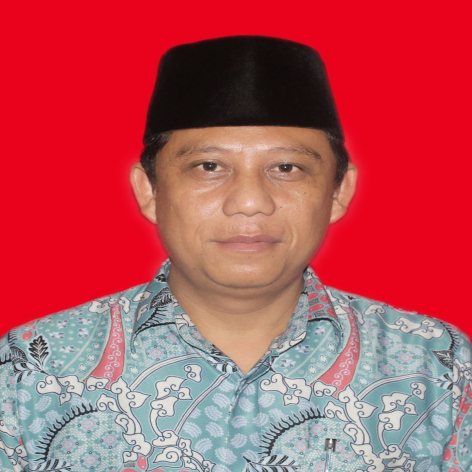
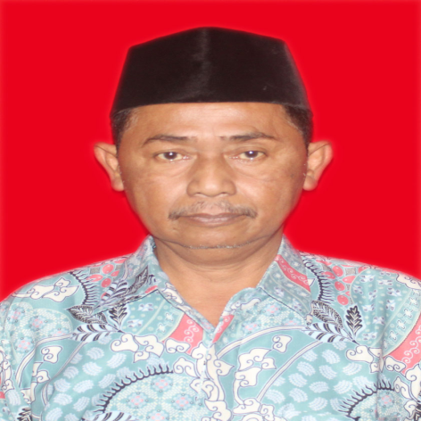
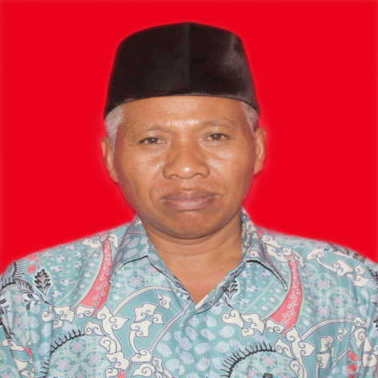
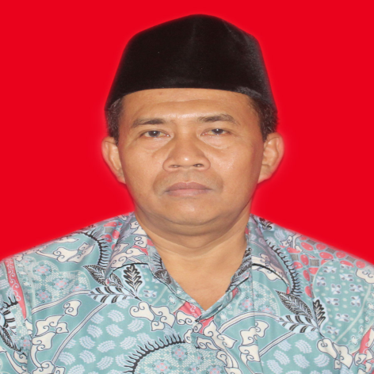
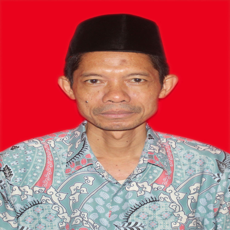
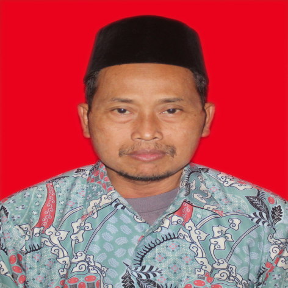

Kepala Madrasah.
NADLIRON, S.Ag. Guru PPKN.
Waka Kurikulum.
 Samsul Hidayat, S.Ag. M.PdI. Guru Aqidah Akhlak
Samsul Hidayat, S.Ag. M.PdI. Guru Aqidah Akhlak
Waka Kesiswaan.
 Abdullah Asyik, S.Pd. Guru B. Inggris
Abdullah Asyik, S.Pd. Guru B. Inggris
Bimbingan Konseling.
 Hendra Gunarko, S.Pd Guru Matematika.
Wali Kelas.
 K. Rochani Sukirman Guru Mushola Hadits
K. Rochani Sukirman Guru Mushola Hadits
Wali Kelas.
K. Achmad Tamziz. Guru B. Arab
Wali Kelas.
Suratno. S.Pd. Guru IPS
Wali Kelas.
Munthohar, S.Pd.I Guru Seni Budaya
Wali Kelas.
 Nur Hidayat. S.Pd. Guru B. Indonesia
Nur Hidayat. S.Pd. Guru B. Indonesia
Wali Kelas.
Tabi'in. S.Pd.I Guru B. Arab
Wali Kelas.
Mukhlas. S.Pd.I. Guru B. Arab
Wali Kelas.
Abdul Basith. S.Pd.I Guru Alqur'an Hadits